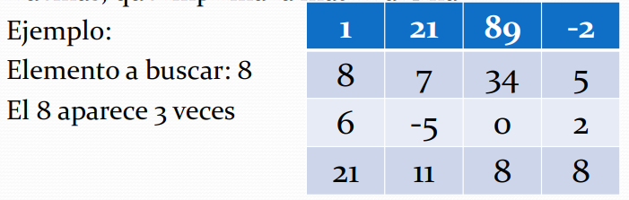

Tarea 20: Búsqueda en Matriz
Construya un programa en Java que, al recibir como datos un arreglo bidimensional de NxM elementos de tipo entero y un número entero, determine cuántas veces se encuentra este número dentro del arreglo. Además, que imprima la matriz al final.
Ejemplo:
Elemento a buscar: 8
El 8 aparece 3 veces

// Héctor Mauricio Flores Martínez 1897759
import java.util.Scanner;
public class tarea20 {
public static void main(String[] args) {
Scanner input = new Scanner(System.in);
System.out.print("Ingresa el número de filas: ");
int n = input.nextInt();
System.out.print("Ingresa el número de columnas: ");
int m = input.nextInt();
// Declaramos la matriz
int[][] matrix = new int[n][m];
// Llenamos la matriz
for (int i = 0; i < n; i++) {
for (int j = 0; j < m; j++) {
System.out.print("A[" + i + "][" + j + "] = ");
matrix[i][j] = input.nextInt();
}
}
// Pedimos el valor a buscar
System.out.print("Ingresa el número a buscar: ");
int valorBuscado = input.nextInt();
int vecesEncontrado = 0;
for (int i = 0; i < n; i++) {
for (int j = 0; j < m; j++) {
if (valorBuscado == matrix[i][j]) {
vecesEncontrado++;
}
}
}
// Imprime el resultado
System.out.println("El "
+ valorBuscado
+ " aparece "
+ vecesEncontrado
+ " veces."
);
// Imprime la matriz
System.out.println("\nMatriz");
for (int i = 0; i < n; i++) {
for (int j = 0; j < m; j++) {
// Formatea los números
System.out.printf("%4d ", matrix[i][j]);
}
System.out.println();
}
input.close();
}
}